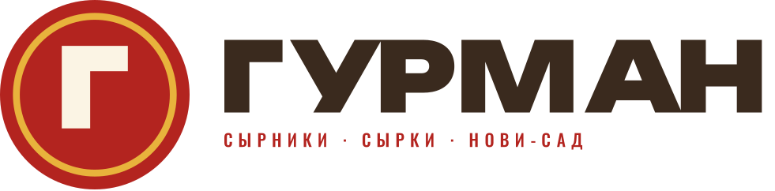
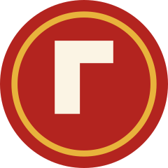
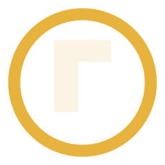
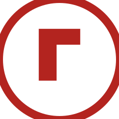

Знак — буква Г на круглом диске с масляным кольцом. Три крупных элемента и ни одной мелкой детали: буква, круг, кольцо. Такое собирается в одно пятно и читается в любом размере — от ценника в морозилке до вывески.
Чего в знаке принципиально нет: стопок, крошек, точек, вишен и прочих мелких элементов. Именно они превращали прежний силуэт в посторонний предмет. Знак должен собираться в одно пятно, а не в картинку.


Светлый фон: пачка, сайт, документы. Диск вишнёвый, кольцо масляное, буква кремовая.
Какао, вишня, фото: диск убирается, остаются кольцо и кремовая буква.
Одна краска: плёнка, крафт, штамп, факс-печать, чек. Диск залит, буква выворотом.
Лёгкие носители: гравировка, тиснение, водяной знак, шелфтокер на прозрачном.
Палитра не менялась — она нравится и работает: вишня как главный цвет, масло как акцент, какао как основа для текста и тёмных носителей, сливки как воздух.
HEX #B3241F · RGB 179 36 31 · CMYK 0/80/83/30HEX #E8B33C · RGB 232 179 60 · CMYK 0/23/74/9HEX #3A2A1E · RGB 58 42 30 · CMYK 0/27/48/77HEX #FBF4E4 · RGB 251 244 228 · CMYK 0/3/9/2HEX #C6A275 · RGB 198 162 117 · CMYK 0/18/41/22HEX #7E0A1C · RGB 126 10 28 · CMYK 0/92/78/51HEX #FFFDF7 · RGB 255 253 247 · CMYK 0/1/3/0HEX #B4AB9CВекторные файлы, буквы переведены в кривые: открой в Illustrator, Figma, CorelDRAW или отправь в типографию как есть.
Что нужно от производства, чтобы довести упаковку: состав по порядку, КБЖУ, вес одной штуки, срок хранения, ПИБ и матични број, телефон и мессенджер для заказа. После этого собираем финальные диелайны под типографию.